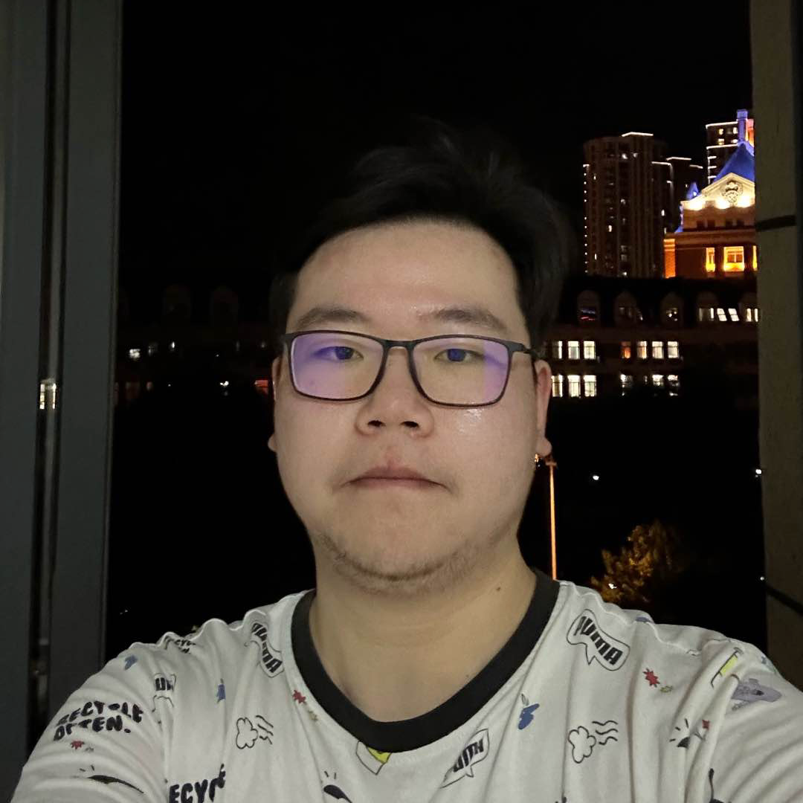
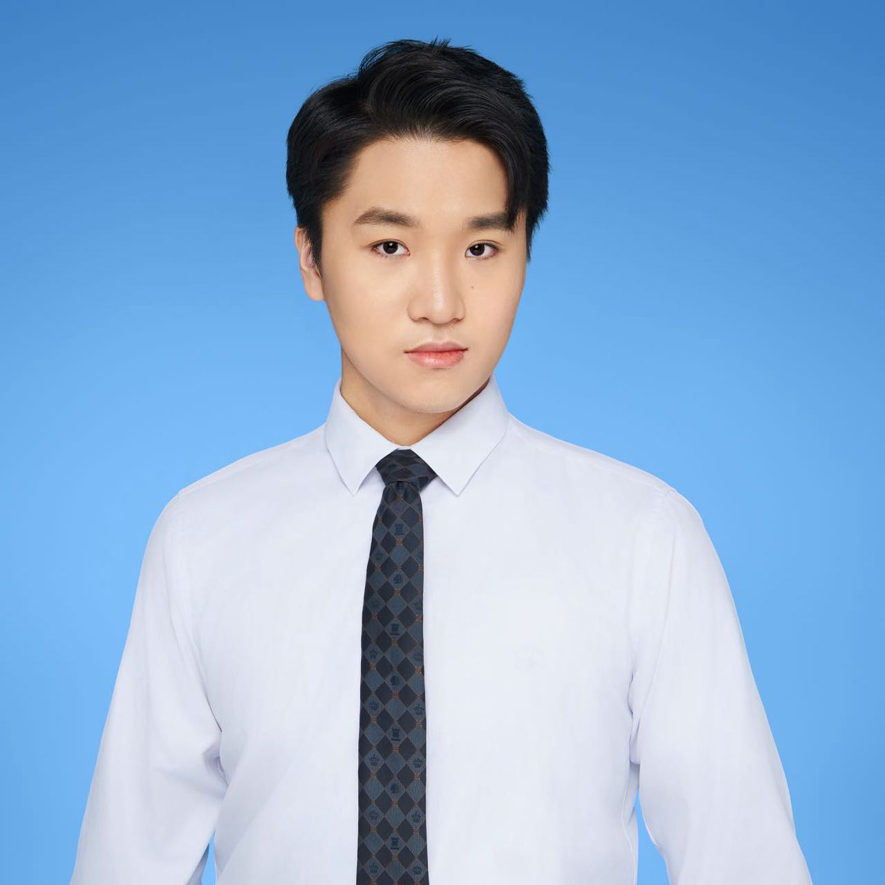
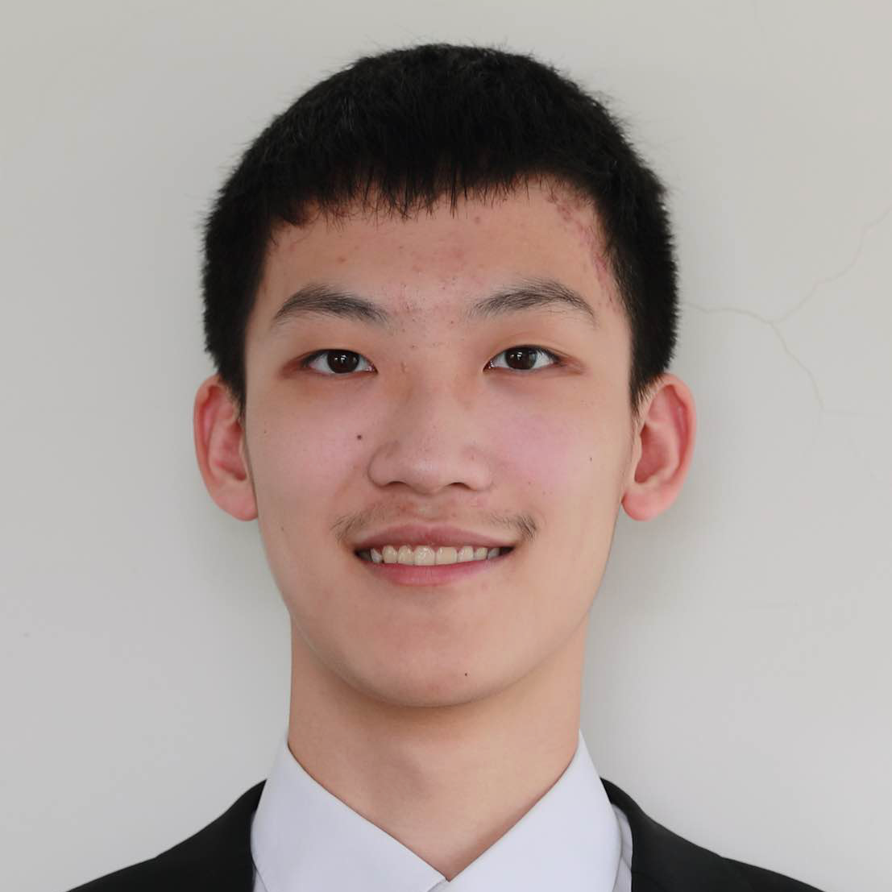
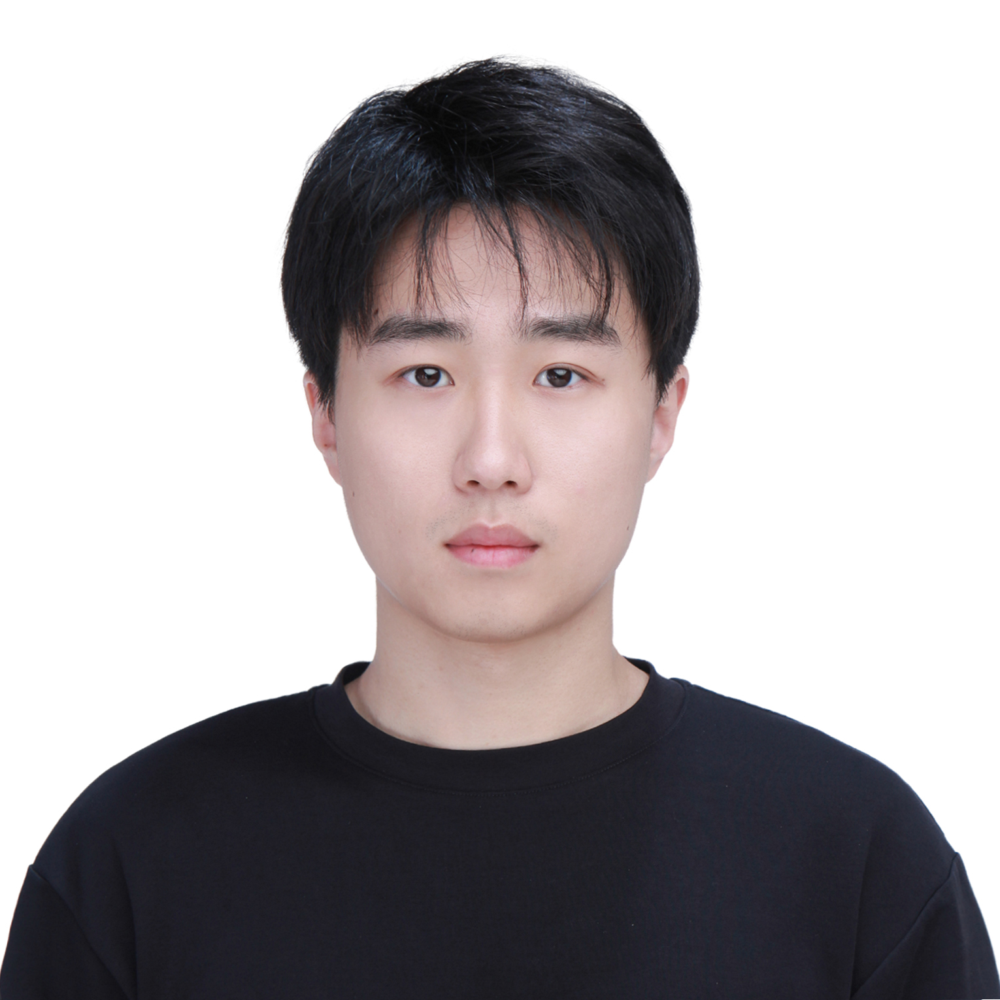
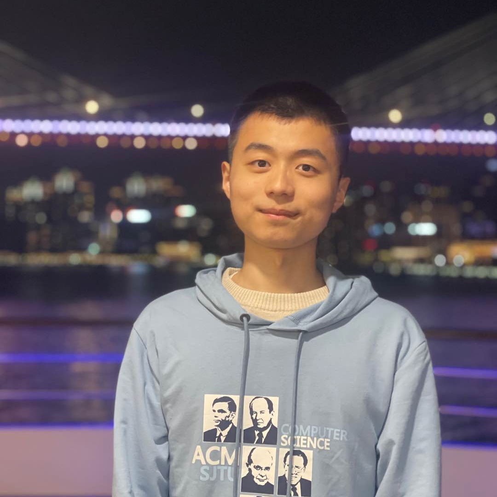
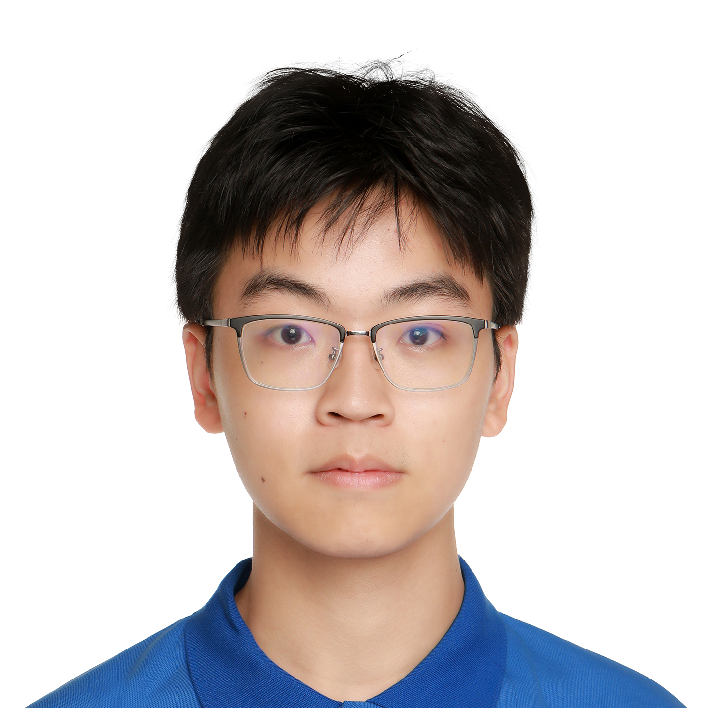
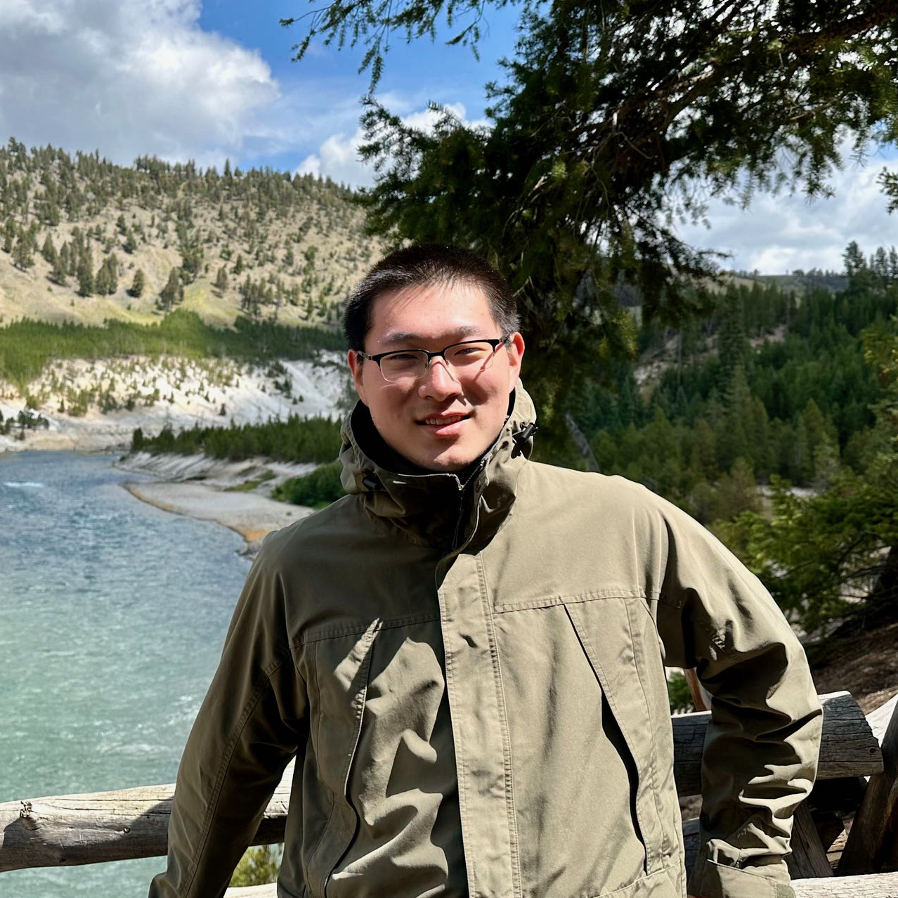
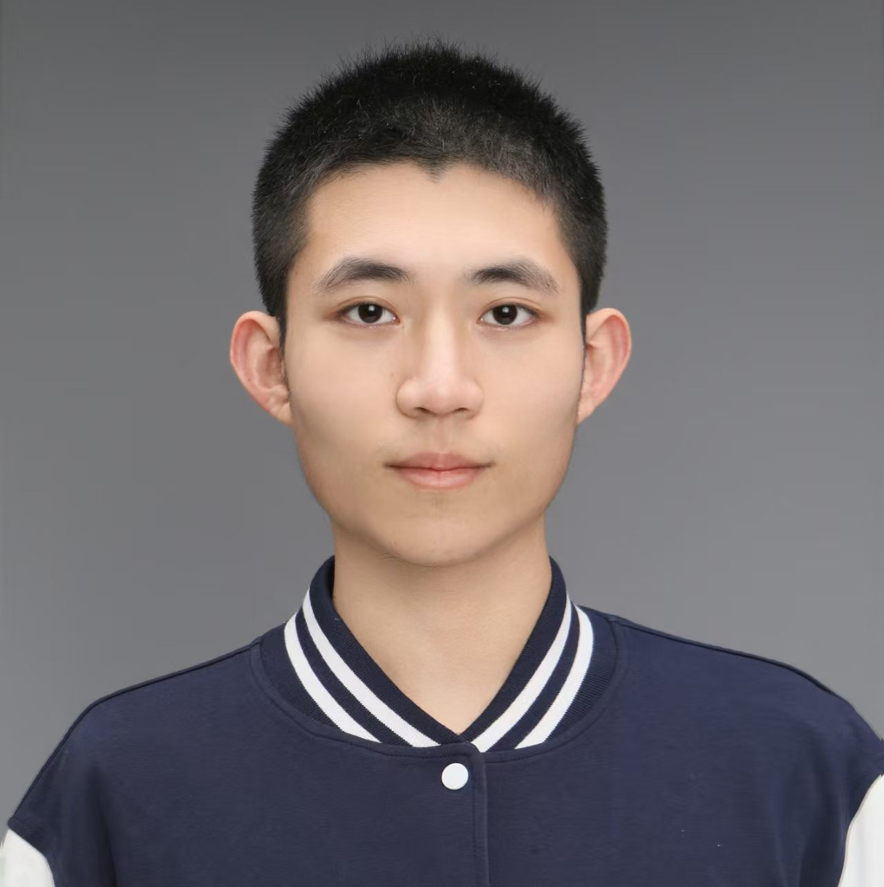
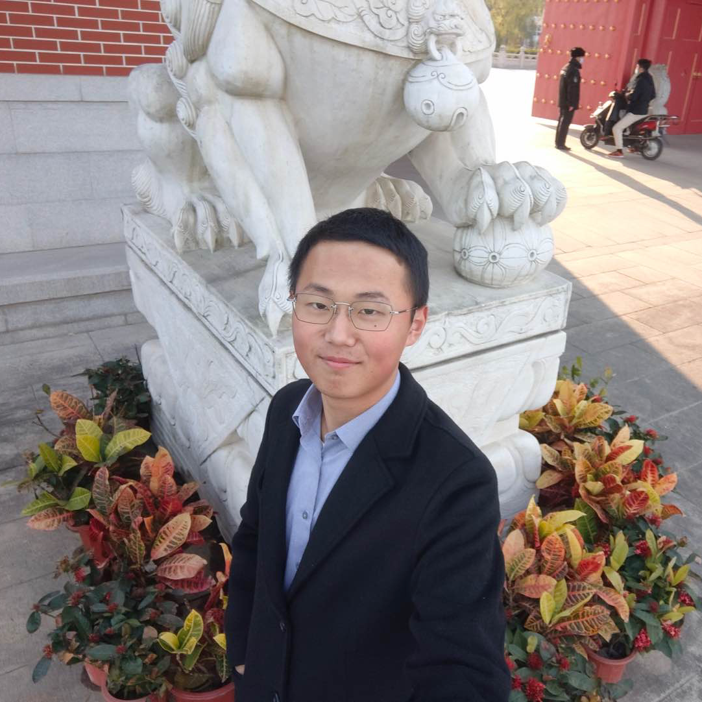

Ruiyi Wang 王睿一
SJTU-Michigan, ECE. Undergraduate research assistant from 2023 to 2024. Now pursuing the Master’s degree at University of California San Diego.

Yongyang Pan 潘永阳
SJTU SEIEE, AI Class. Undergraduate research assistant from 2023 to 2024. Now pursuing the Master’s degree at University of Illinois Urbana-Champaign.

Jiache Zhang 张佳澈
SJTU-Michigan, ECE. Undergraduate research assistant from 2023 to 2024. Now pursuing the Master’s degree at Carnegie Mellon University.

Sizhe Lv 吕嗣哲
SJTU SEIEE, AI Class. Undergraduate research assistant from 2023 to 2024. Now pursuing the Master’s degree at University of Washington.

SJTU Zhiyuan, ACM Class. Undergraduate research assistant from 2023 to 2024. Now pursuing the Ph.D. degree at Shanghai Jiao Tong University.

Qirui Li 李奇睿
SJTU SEIEE, AI Class. Undergraduate research assistant from 2023 to 2024. Now pursuing the Ph.D. degree at Shanghai Jiao Tong University.

Xuehao Cui 崔学浩
SJTU-Michigan, ECE. Undergraduate research assistant from 2023 to 2024. Now pursuing the Ph.D. degree at University of Maryland, College Park.

Tianyi Zhang 张天一
TJU CEIE, CS. Undergraduate research assistant from 2024 to 2025. Now pursuing the Master’s degree at The George Washington University.

Shengyao Chen 陈圣尧
SJTU Zhiyuan, ACM Class. Undergraduate research assistant from 2024 to 2025. Now pursuing the Ph.D. degree at Shanghai Jiao Tong University.
Kangrui Cen 岑康瑞
SJTU Zhiyuan, John Hopcroft Class. Undergraduate research assistant from 2024 to 2025. Now pursuing the Ph.D. degree at The Hong Kong Polytechnic University.

Xunchu Zhou 周恂初
SJTU SEIEE, IEEE Class. Undergraduate research assistant from 2023 to 2025. Now pursuing the Ph.D. degree at Shanghai Jiao Tong University.